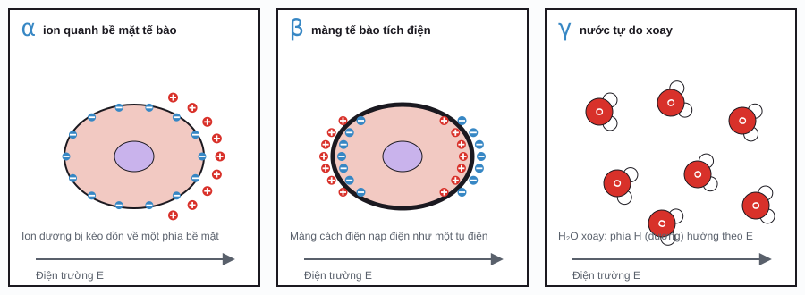

Sinh điện từ / Phần 4
Tính chất điện môi của mô
Mô sống vừa dẫn điện (nhờ ion), vừa tích điện như tụ điện (nhờ màng tế bào và phân tử nước phân cực). Mức độ của hai tính chất này thay đổi rất mạnh theo tần số. Muốn biết trường điện từ đi vào cơ thể bao xa và để lại bao nhiêu năng lượng, trước hết phải biết hai con số: độ dẫn điện σ và hằng số điện môi ε của từng loại mô.
Độ dẫn điện, hằng số điện môi, điện trở suất
Đặt một mẫu mô giữa hai bản cực và cho dòng xoay chiều tần số f chạy qua. Dòng điện tổng gồm hai phần. Dòng dẫn (conduction current) do ion di chuyển, cùng pha với điện trường và tỉ lệ với độ dẫn điện (conductivity) σ. Dòng dịch chuyển (displacement current) do các điện tích bị kéo lệch hoặc phân tử bị xoay theo trường, sớm pha 90° và tỉ lệ với hằng số điện môi (permittivity) ε = ε₀εᵣ.
Hai phần này có thể gộp thành một số phức duy nhất, hằng số điện môi phức (complex permittivity). Phần thực ε′ cho biết mô "chứa" được bao nhiêu năng lượng điện; phần ảo ε″ (hệ số tổn hao, loss factor) cho biết bao nhiêu năng lượng bị biến thành nhiệt.
ω = 2πf: tần số góc (rad/s); ε₀ ≈ 8,854 × 10⁻¹² F/m; εᵣ (hay ε′): hằng số điện môi tương đối, không có đơn vị; σ: độ dẫn điện (S/m); ρ: điện trở suất (Ω·m); tan δ: hệ số tổn hao (loss tangent). Khi tan δ ≫ 1, mô cư xử như vật dẫn; khi tan δ ≪ 1, mô cư xử như chất điện môi.
| Đại lượng | Ký hiệu | Đơn vị | Ý nghĩa | Ghi chú với mô |
|---|---|---|---|---|
| Độ dẫn điệnconductivity | \(\sigma\) | S/m | Khả năng cho dòng điện cùng pha đi qua. | Tăng theo tần số: từ ~0,1–0,7 S/m ở tần số thấp đến vài S/m ở GHz. |
| Điện trở suấtresistivity | \(\rho\) | Ω·m | Nghịch đảo của σ. | Hay dùng trong đo trở kháng sinh học tần số thấp. |
| Hằng số điện môi tương đốirelative permittivity | \(\varepsilon_r, \varepsilon'\) | không đơn vị | Khả năng phân cực, "chứa" năng lượng điện. | Giảm theo tần số: từ 10⁶–10⁷ ở Hz xuống ~50 ở GHz với mô giàu nước. |
| Hằng số điện môi tuyệt đốipermittivity | \(\varepsilon = \varepsilon_0\varepsilon_r\) | F/m | Như trên, kèm đơn vị. | D = εE. |
| Hệ số tổn haoloss factor | \(\varepsilon''\) | không đơn vị | Phần năng lượng bị tiêu tán thành nhiệt. | Gộp cả dòng ion và tổn hao do phân tử xoay. |
| Hệ số tổn hao gócloss tangent | \(\tan\delta\) | không đơn vị | Tỉ số dòng dẫn trên dòng dịch chuyển. | Cơ: ≈ 8 ở 100 kHz, ≈ 0,24 ở 2,45 GHz. |
Giá trị tham khảo
| Mô | 100 Hz | 1 MHz | 100 MHz | 2,45 GHz |
|---|---|---|---|---|
| Cơmuscle | εᵣ ≈ 9,3 × 10⁶; σ ≈ 0,27 | 1840; 0,50 | 66; 0,71 | 53; 1,74 |
| Mỡfat | 4,6 × 10⁵; 0,021 | 27; 0,025 | 6,1; 0,036 | 5,3; 0,10 |
| Máublood | 5260; 0,70 | 3030; 0,82 | 77; 1,23 | 58; 2,54 |
| Chất xámbrain grey matter | 3,9 × 10⁶; 0,089 | 860; 0,16 | 80; 0,56 | 49; 1,81 |
| Xương vỏcortical bone | 5850; 0,020 | 145; 0,024 | 15; 0,064 | 11; 0,39 |
| Da ướtwet skin | 4,5 × 10⁴; 0,00046 | 1830; 0,22 | 66; 0,52 | 43; 1,59 |
Tán sắc α, β, γ
Mỗi cơ chế phân cực cần một khoảng thời gian để "theo kịp" điện trường. Khi tần số vượt quá tốc độ đó, cơ chế này không còn kịp phản ứng, εᵣ tụt xuống một bậc và σ tăng lên một bậc. Mỗi bậc như vậy gọi là một vùng tán sắc điện môi (dielectric dispersion), hay vùng hồi phục (relaxation). Herman Schwan đặt tên ba vùng chính là α, β, γ (1957); về sau người ta thêm vùng δ nhỏ giữa β và γ.
| Vùng | Dải tần (cỡ) | Cơ chế chính | Mức tụt của εᵣ | Ứng dụng / hệ quả |
|---|---|---|---|---|
| α | 10 Hz – 10 kHz | Lớp ion "bám" quanh bề mặt tích điện của tế bào và màng (counterion polarization) dịch chuyển theo trường. | 10⁶ – 10⁷ | Làm εᵣ ở tần số thấp cực lớn; khó đo vì lẫn với phân cực điện cực. |
| β | 100 kHz – 10 MHz | Màng tế bào cách điện bị nạp như tụ điện (Maxwell–Wagner, interfacial polarization); thêm phần phân cực của protein. | 10³ – 10⁵ | Trên vùng β, dòng điện đi xuyên qua tế bào. Đo trở kháng sinh học (BIA), phân tích tế bào. |
| δ | 0,1 – 1 GHz | Nước liên kết với protein, nhóm bên của protein. | vài đơn vị – vài chục | Nhỏ, thường lẫn vào β và γ. |
| γ | quanh 20 GHz | Phân tử nước tự do xoay theo trường (dipolar relaxation, Debye). | ~50 với mô giàu nước | Nguồn gốc của đốt nóng bằng vi sóng; mô càng nhiều nước, hấp thụ càng mạnh. |

Mô hình Debye và Cole–Cole
Một vùng tán sắc đơn giản nhất được mô tả bởi mô hình Debye (Debye relaxation), với một thời gian hồi phục τ duy nhất: εᵣ tụt từ giá trị tĩnh εₛ xuống ε∞ quanh tần số đặc trưng (characteristic frequency) fc = 1/(2πτ), còn ε″ đạt đỉnh tại đúng fc. Nước tinh khiết khớp mô hình này rất tốt.
Mô thì phức tạp hơn: có vô số tế bào với kích thước và hình dạng khác nhau, nên mỗi vùng tán sắc thực chất là chồng của nhiều vùng Debye với τ hơi khác nhau, và bị "trải rộng" ra. Năm 1941, anh em Kenneth và Robert Cole thêm một tham số α (0 ≤ α < 1) để mô tả độ trải rộng đó. Vẽ ε″ theo ε′, mô hình Debye cho một nửa đường tròn; Cole–Cole cho một cung tròn bị "ép dẹt" với tâm nằm dưới trục hoành: đó là giản đồ Cole–Cole (Cole–Cole plot).
Δε = εₛ − ε∞: mức tụt của εᵣ; τ: thời gian hồi phục (s); α: độ trải rộng (α = 0 là Debye); σᵢ: độ dẫn ion tĩnh (S/m), làm ε″ tăng vọt ở tần số thấp.
Debye và Cole–Cole: một vùng tán sắc
Chỉnh tham số, so sánh với đường DebyePhổ điện môi của mô: mô hình 4 vùng
Năm 1996, Camelia Gabriel, Sami Gabriel và R. W. Lau đo hơn 30 loại mô từ 10 Hz đến 20 GHz và mô tả mỗi loại bằng tổng của bốn số hạng Cole–Cole (ứng với α, β, δ, γ) cộng với độ dẫn ion. Bộ tham số này đến nay vẫn là chuẩn tham chiếu cho hầu hết các mô phỏng đo liều (dosimetry) và được dùng trong các cơ sở dữ liệu như IT'IS.
Mỗi mô có 14 tham số. Mô hình dùng tin cậy trên 1 MHz; dưới đó là ước lượng tốt nhất, sai số có thể tới hai lần do khó đo (phân cực điện cực).
Phổ điện môi của mô (mô hình Gabriel)
So sánh hai mô; kéo trên đồ thị để đọc giá trịVài điều đáng chú ý trên đồ thị. Mỡ và xương nghèo nước nên εᵣ và σ của chúng thấp hơn cơ, máu khoảng mười lần ở mọi tần số. Máu và dịch não tủy có σ gần như phẳng ở tần số thấp, vì không có (hoặc ít) màng tế bào chắn dòng điện. Còn da khô ở tần số thấp gần như cách điện: lớp sừng ngoài cùng chặn dòng điện, đó là lý do điện cực ECG cần gel.
Tham số của một số mô
| Mô | ε∞ | σᵢ (S/m) | Δε₁; τ₁ (ps); α₁ | Δε₂; τ₂ (ns); α₂ | Δε₃; τ₃ (µs); α₃ | Δε₄; τ₄ (ms); α₄ |
|---|---|---|---|---|---|---|
| Cơ | 4 | 0,2 | 50; 7,234; 0,1 | 7000; 353,68; 0,1 | 1,2 × 10⁶; 318,31; 0,1 | 2,5 × 10⁷; 2,274; 0 |
| Mỡ | 2,5 | 0,01 | 3; 7,958; 0,2 | 15; 15,915; 0,1 | 3,3 × 10⁴; 159,16; 0,05 | 10⁷; 7,958; 0,01 |
| Máu | 4 | 0,7 | 56; 8,377; 0,1 | 5200; 132,63; 0,1 | 0 | 0 |
| Chất xám | 4 | 0,02 | 45; 7,958; 0,1 | 400; 15,915; 0,15 | 2 × 10⁵; 106,1; 0,22 | 4,5 × 10⁷; 5,305; 0 |
| Xương vỏ | 2,5 | 0,02 | 10; 13,263; 0,2 | 180; 79,577; 0,2 | 5000; 159,16; 0,2 | 10⁵; 15,915; 0 |
| Dịch não tủy | 4 | 2 | 65; 7,958; 0,1 | 40; 1,592; 0 | 0 | 0 |
Độ xuyên sâu
Khi sóng điện từ đi vào mô dẫn điện, năng lượng bị hấp thụ dần và biên độ trường giảm theo hàm mũ. Độ xuyên sâu (penetration depth) δ là độ sâu mà tại đó biên độ điện trường còn 1/e ≈ 37% so với ở bề mặt; khi đó công suất (∝ E²) chỉ còn 1/e² ≈ 13,5%. Một số tài liệu định nghĩa độ xuyên sâu theo công suất, bằng δ/2; khi đọc số liệu cần để ý định nghĩa nào đang được dùng.
Hai trường hợp giới hạn: vật dẫn tốt (tan δ ≫ 1) có \(\delta \approx \sqrt{2/(\omega\mu_0\sigma)}\), tức độ sâu lớp da (skin depth); điện môi ít tổn hao (tan δ ≪ 1) có \(\delta \approx \frac{2}{\sigma}\sqrt{\varepsilon_0\varepsilon'/\mu_0}\).
Độ xuyên sâu và lớp mô
Chọn tần số và bề dày lớp mỡLịch sử
- 1873
Maxwell và Wagner: phân cực mặt phân cách
Maxwell (1873) rồi Karl Willy Wagner (1914) chỉ ra rằng một vật liệu gồm nhiều lớp có độ dẫn khác nhau sẽ tích điện ở mặt phân cách và cư xử như có hằng số điện môi rất lớn ở tần số thấp. Đây chính là cơ chế của vùng β ở mô.
- 1910
Rudolf Höber: bên trong tế bào dẫn điện
Höber thấy huyết cầu dẫn điện kém ở tần số thấp nhưng tốt hơn hẳn ở tần số cao, và kết luận rằng tế bào có phần bên trong dẫn điện được bao bởi một lớp màng cách điện.
- 1912
Peter Debye: phân tử phân cực
Debye đưa ra lý thuyết về các phân tử có lưỡng cực vĩnh cửu xoay theo điện trường với một thời gian hồi phục, cơ sở của mô hình Debye và của vùng γ do nước.
- 1925
Hugo Fricke: đo bề dày màng tế bào
Từ điện dung của dung dịch hồng cầu (khoảng 0,8 µF/cm² màng), Fricke ước tính màng tế bào chỉ dày cỡ 3–4 nm, tức một lớp phân tử kép. Đây là phép đo bề dày màng sớm nhất, trước kính hiển vi điện tử nhiều chục năm.
- 1939
Cole và Curtis: trở kháng của sợi trục mực ống
Kenneth Cole và Howard Curtis đo trở kháng màng sợi trục trong lúc có điện thế hoạt động: độ dẫn của màng tăng vọt nhiều lần trong khi điện dung gần như không đổi. Màng "mở cửa" cho ion, ý tưởng dẫn tới mô hình Hodgkin–Huxley.
- 1941
Kenneth và Robert Cole: giản đồ Cole–Cole
Hai anh em đề xuất biểu thức có thêm tham số α và cách vẽ ε″ theo ε′, nay là công cụ chuẩn để phân tích phổ điện môi.
- 1957
Herman Schwan: các vùng α, β, γ
Trong bài tổng quan "Electrical properties of tissue and cell suspensions", Schwan phân loại và đặt tên ba vùng tán sắc chính của mô, đặt nền móng cho ngành điện từ sinh học hiện đại.
- 1996
Gabriel, Lau và Gabriel
Ba bài báo trên Physics in Medicine and Biology: tổng quan tài liệu, đo hơn 30 loại mô từ 10 Hz đến 20 GHz, và mô hình 4 vùng Cole–Cole dùng trong trang này.
Tài liệu tham khảo
- S. Gabriel, R. W. Lau, C. Gabriel, "The dielectric properties of biological tissues: III. Parametric models for the dielectric spectrum of tissues", Phys. Med. Biol. 41 (1996) 2271–2293. doi:10.1088/0031-9155/41/11/003.
- C. Gabriel, S. Gabriel, Compilation of the dielectric properties of body tissues at RF and microwave frequencies, 1996. Appendix C trên WebNIR / IFAC-CNR (bảng tham số, công cụ tính trực tuyến).
- IT'IS Foundation, Tissue Properties Database (εᵣ, σ, khối lượng riêng, tính chất nhiệt).
- K. R. Foster, H. P. Schwan, "Dielectric properties of tissues and biological materials: a critical review", Crit. Rev. Biomed. Eng. 17 (1989) 25–104.
- K. S. Cole, R. H. Cole, "Dispersion and absorption in dielectrics I", J. Chem. Phys. 9 (1941) 341–351.